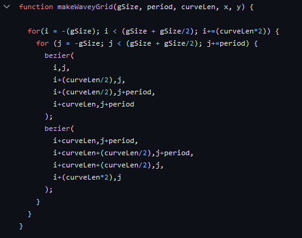
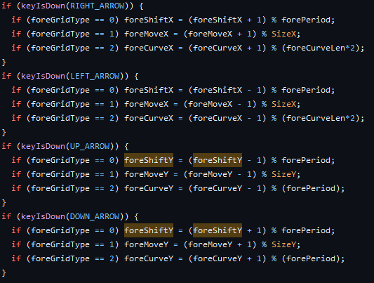
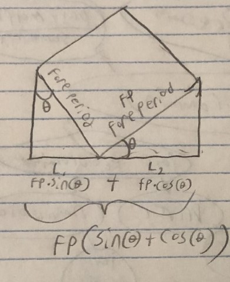

Experiment 2 - Moire Patterns
Imitate
I started out by looking up different moire patterns online, which consist of 2 or more grids misalaigned on top of eachother. seeing all the different kinds, I knew I wanted some way to play with moire patterns in a dynamic environment.
I started with coding my own basic square grid, constructed with very simple lines, seperated by a set period length. Once I figured out how to take input in P5.JS, changing simple variables like the period, line weight, and position was implimented, I had the ability to both display a pattern, and interact with it.
Integrate
I wanted more then just the square grid patterns, so I setup my foreground grid drawing to handle more then 1 kind of pattern, and added both a circular pattern, and a wavey pattern.
the circular pattern was simple enough, it just draws circles of bigger radiuses, in step with the period length. The Wavey pattern proved to be much more difficult. I ended up delving into P5JS's implimentation of the bezier curve, drawing 1 full curve out of 2 bezier curves over 2 lengths at a time (so they I could repeat the pattern). My first attempt was a complete mess, as I hadn't quite figured out how to use bezier curves (I unfortunatly forgot to document this mess), but I eventually landed on this function, albiet laggy, implimentation.
Another big feature that I wanted to include was rotation, and the ability to shift the wavey and grid patterns infinitly in any direction, rather then have them reach the end of the pattern and be forced to move it the other direction.
Innovate
I First wanted to shift may patterns infinitly. I observed that once each pattern moves by 1 period length, that it looks exactly like it did at the start. so I implimented code that would modulo the shift variable by the period length to reset back to zero once we moved 1 whole period, with slight modifications to the wavey pattern to account for the longer curve length. at first, this seemed to work extremely well
Once I could shift the patterns, I moved on to rotation. P5JS's rotate function is awkward in that it only rotates from the canvas origin. So i just ended up translating the entire canvas so the grid would draw itself rotated at the origin, then translated back. this worked! I was able to now rotate the patterns from the center of the canvas
However, in messing around with the thought-to-be finished project I noticed a problem; whenever the patterns were rotated, then shifted, there would be a weird jump. I realised that when I rotated the the patterns, the horizontal length of the pattern would grow to be the cross length of the rectangle. Because I reset the shifted position by the period length, which would be a bit shorter then needed, the jump wasn't being disguised.
To solve this, I simply changed my modulo function on the shift value to modulo by the actual horizontal/vertical bounding box length. I tried 2 different implimentations of this, one by using trigonomic identities, and the other by linear interpolation from the period length to the cross length.
these greatly reduced the jumping, however due to my implimentation of rotation/translation and the limits of floating point mathematics, I could not fully remove it. for the wavey pattern, I decided to simply shift the pattern at the same angle as the rotation, which both looked better then the original, and removed the problem because the shift would always be parallel with pattern. For the square grid, the jumping was not extremely noticable, so I decided to lessen it's impact further by making the period shift every 6 lengths, and leave it as is.
Reflection
As a solo project, I wanted to make sure I picked something simple. I had already been looking at moire patterns before experiment 2 started, so I knew what I wanted from the start. I think I could have gone in a more artistic direction with this experiment, the end product is cool, but it feels almost feels more like a tool. If I could restart I would have focused more on just doing 1 really cool moire pattern, with less interactable variables that make me solve edge cases. I got really caught up with making everything interactable and customizable
I think overall, getting the actual moire patterns working took up about 20% of my time on this project, another 20% was getting the bezier curves to look nice, and the other %60 percent was going insane trying to solve the shifting jump issue. Each setback was exhausting, but being able to mess around with it and see all the trippy patterns made it all worth it.
Results
Controls
- Change Foreground Grid: W
- Change Background Grid: S
- Increase/Decrease Size: Q/A
- Increase/Decrease Line Weight: E/D
- Rotate Grid: R/F
- Shift Grid around: Arrow Keys